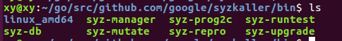
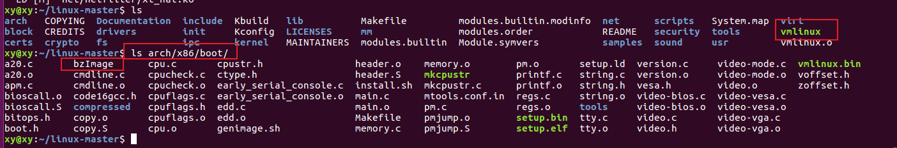

syzkaller
1.总览
关于Syzkaller是什么，我就不多说了，介绍的文档很多。直接进入正题吧~
github上英文版的指导中，有些许坑需要自己踩踩，所以将搭建syzkaller的环境记录下来，供之后参考。本文计划搭建如下几个环境（会不断更新）：
1 | 1. 使用syzkaller去fuzz x86-64架构的linux内核，这个内核是用qemu模拟的。 |
在正式开始之前，先说一下基本环境。我用来搭建环境的主机是Ubuntu18.04虚拟机，gcc版本是7.5.0。
1 | syzkaller官网对gcc版本的要求是>6.1.0。所以如果你的主机是Ubuntu16.04的话，可以按照安装gcc章节升级一下本地gcc版本。 |
ubuntu 18.04搭建syzkaller环境，需要做以下四件事情：
1、准备好C编译环境。
2、准备好待测试的Linux kernel，并开启coverage代码覆盖率选项。
3、准备测试机，虚拟机或者物理机。
4、准备好syzkaller源码，并编译。（由于syzkaller是由go语言写的，所以这里需要提前安装好go语言环境）
2.安装GCC
gcc下载地址：gcc下载
宿主机自带的gcc版本过低的话，需要在原本的基础上新装一个高版本的gcc。这里我选择源码安装，并且将它安装到一个单独目录，这样今后想卸载的话，直接删除该目录即可。
- 解压gcc-7.4.0源码包：
tar -zxvf gcc-7.4.0.tar.gz（或者tar -Jxvf gcc-7.4.0.tar.xz） - 下载安装依赖项：在解压完的源码包中，执行./contrib/download_prerequisites（需更改base_url为http://mirror.linux-ia64.org/gnu/gcc/infrastructure/，如果执行时一直没有进度，考虑加上sudo权限执行）。若执行不成功，则需自行下载安装，步骤如下。
1 | gcc7.4.0依赖的gmp,mpfr和mpc版本如下： |
3 x86-64 linux kernel in qemu
标题解释：这一小节的fuzz对象是linux kernel，架构是x86-64，是使用qemu模拟出来的。
3.1 编译syzkaller
3.1.1 搞定go环境
1 | wget https://dl.google.com/go/go1.14.2.linux-amd64.tar.gz |
goroot/ 存放go源码
gopath/ 是go的工作目录
需要将它们都添加到环境变量~/bashrc中去，然后再source ~/.bashrc更新一下环境变量。
3.1.2 下载syzkaller源码
1 | go get -u -d github.com/google/syzkaller/prog |
不要小瞧这一行代码，如果不把代理配置好，咱们在国内的同学可是要下哭。关于代理的配置，之后有空再更新文章吧。
3.1.3 编译syzkaller
1 | cd gopath/src/github.com/google/syzkaller/ |
这里需要注意，如果是在虚拟机中编译，要把虚拟机内存给多一点，比如8G。（我一开始只给了虚拟机4G内存，结果编译不通过）
编译通过后，就可以在syzkaller的bin/下看到二进制文件啦。

3.2 编译linux kernel
linux kenrel github链接：https://github.com/torvalds/linux
3.2.1 一切顺利的情况
- 下载linux源码
1 | git clone git://git.kernel.org/pub/scm/linux/kernel/git/torvalds/linux.git |
- 生成配置文件
1 | cd $kernel |
- 更改.config文件对内核的配置选项或者使用
make menuconfig进行配置
1 | Coverage collection. |
- 重新生成config文件
1 | make olddefconfig |
- 开始编译内核
1 | make -j4 |
编译完成后，可以在如下目录中看到vmlinux和bzImage文件
1 | ls $KERNEL/vmlinux |
3.2.2 若gcc版本过低
最初有一次使用gcc 7.1.0编译最新版kernel时出错“You are building kernel with non-retpoline compiler, please update your compiler..”。查阅了一些资料显示，是由于retpoline只有gcc7.3.0及以上的版本才支持，因此需要在本地编译一个高版本gcc，并使用如下方式指定make时的编译器。以gcc8.0.1为例，编译过程如下：
1 | cd $KERNEL |
然后更改.config文件中的选项，使其支持我们需要的一些功能
1 | CONFIG_KCOV=y |
保存完该文件后，编译
1 | make CC=" /usr/local/gcc-8.0.1/bin/gcc" oldconfig |
编译完成后，可以看到vmlinux（kernel binary）和bzImage（packed kernel image）。

3.3 配置qemu vm
- 安装qemu
使用一条简单的命令即可：
1 | sudo apt-get install qemu-system-x86 |
- 生成image
使用debootstrap构建linux启动镜像：
1 | sudo apt-get install debootstrap |
完成之后目录内容如下：
1 | bling@Ubuntu1804:~/s_image$ ll |
- 启动虚拟机
启动虚拟机试试
1 | qemu-system-x86_64 -m 2G -smp 2 -kernel /home/bling/Downloads/linux-5.5.1/arch/x86/boot/bzImage -append "console=ttyS0 root=/dev/sda earlyprintk=serial net.ifnames=0" -drive file=/home/bling/s_image/stretch.img,format=raw -net user,hostfwd=tcp:127.0.0.1:10021-:22 -net nic,model=e1000 -enable-kvm -nographic -pidfile vm.pid 2>&1 | tee vm.log |
对以上各参数我的理解如下：
1 | -kernel xxx/bzImage：用bzImage作为内核镜像，qemu的这个功能用来测试不同内核非常方便。 |
参考了两篇文章：（1）hostfwd的问题 （2）make 2>&1 | tee log.txt 命令解析
qemu启动起来之后，运行ssh测试一下是否连通，便于后期syzkaller运行出错时定位问题。
1 | ssh -i $IMAGE/stretch.id_rsa -p 10021 -o "StrictHostKeyChecking no" root@localhost |
曾经有一次连接时在这里出了问题，宿主机上ssh无法连接到虚拟机。原因如下：
由于上一步中create-image.sh中如下eth0跟实际qemu虚拟机中运行的网卡名称不一样，导致网卡没有分配IP地址。最后解决方法如下：qemu启动虚拟机，root用户身份登录后，设置网卡IP地址。

参考文章：（1）网卡没分配IP地址的解决方法（2）rsa公私钥知识点（3）一个自己生成公私钥配置的方法
1 | 关闭qemu虚拟机 |
3.4 启动syzkaller
为了使syzkaller运行起来，在syzkaller目录下，新建一个workdir目录，并新建一个config文件用于配置运行所需参数（命名为xxx.cfg）
1 | mkdir workdir |
cfg文件的格式如下，根据实际情况各参数可做更改：
1 | { |
执行成功后，如下图所示：

4 arm64 android kernel goldfish
标题解释：这一小节的fuzz对象是linux kernel，架构是arm64，是使用goldfish模拟出来的。
待补充…
5 定制
对于新的内核接口，增加系统调用描述
5.1 syz-extract和syz-sysgen
syzkaller在编译的时候，默认不会编译syz-extract这个模块。因此我们需要手工编译一下。
在syzkaller源码目录下，执行如下命令：
1 | make bin/syz-extract |
如果syz-sysgen也没默认编译的话，执行如下命令：
1 | make bin/syz-sysgen |
他俩的关系是这样的：
1 | +-------+ +---------+ +------+ |
我们针对某个驱动接口写出xxx.txt，然后使用syz-extract利用txt和源码生成const文档，最后执行syz-sysgen时syzkaller会根据txt和const生成一个go文件。可在sys/linux/gen/amd64.go和executor/syscalls.h中看到结果。
5.2 一次定制示例
- 编写一个有漏洞的驱动接口，并将其编译进内核（或者使用打ko的方式）。
- 编写驱动接口对应的txt文件，将其放入syzkaller/sys/linux目录下，生成go文件并重新编译syzkaller。
- 运行syzkaller，改config文件指定fuzz接口提高速率，最后分析crash。
5.2.1 构造一个内核模块的漏洞
- 在
kernel_src/drivers/char目录下，新建一个testxy.c。内容如下，这是一个有漏洞的内核模块。
1 |
|
- 打开char/目录下的Kconfig文件，添加：
1 | config TESTXY_MODULE |
- 打开char/目录下的Makefile文件，添加：
1 | (CONFIG_TESTXY_MODULE) += testxy.o |
若/linux/drivers/char/是新目录，还需修改/linux/drivers/Kconfig（加上source “drivers/char/Kconfig”）；修改/linux/drivers/Makefile（加上obj-$(CONFIG_TEST_MODULE) += char/）。
- make menuconfig时可以在
Device Drivers -> Character devices -> Heap Overflow Test(*表示直接编如内核，M表示模块形式) 处看到刚刚添加的测试模块。
1 | make clean |
- 用新的内核启动虚拟机，查看模块是否加载成功
1 | 查看模块对应设备节点是否存在 |
5.2.2 定制txt系统调用描述文件
- syzkaller源码中，找到sys/linux/目录，新建一个文件，命名为
proc_operation.txt，内容如下：
1 | include <linux/fs.h> |
- 使用syz-extract生成const文件。指定txt文件名，可单独生成该文件对应的const文件。
1 | bin/syz-extract -os linux -sourcedir "/home/bling/Downloads/linux-5.5.1" -arch amd64 proc_operation.txt |
- 运行syz-sysgen
- 重新编译syzkaller
1 | make clean |
5.2.3 验证能否成功触发crash
启动syzkaller的配置文件如下。为了更快看到crash结果，增加了“enable_syscalls”项，只允许某些系统调用，效率更快。
1 | { |
启动syzkaller进行测试：
1 | ./bin/syz-manager -config=abcd.cfg |
触发到漏洞分支！


5.3 txt文件语法
http://embedsec.systems/zh/gnulinux-security/2017/06/05/syzkaller-demo.html
5.4 config文件
编译ko的方法
test.c
1 |
|
Makefile
1 | obj-m := testxy.o |